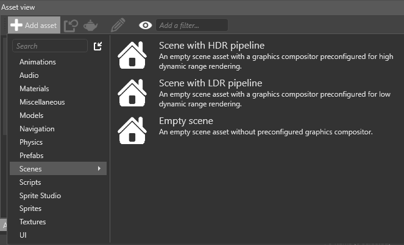
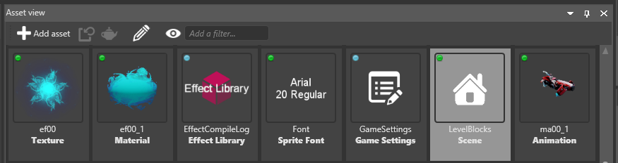
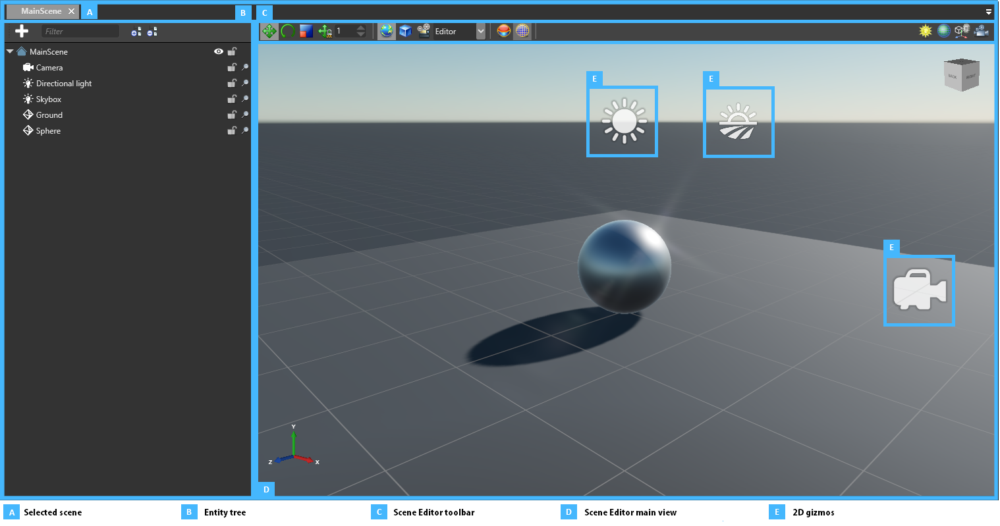

Create and open a scene
Warning
Приносим свои извинения за неудобства. Для этой страницы нет перевода на русский язык. Она будет отображаться на английском языке.
Beginner Level Designer
When you create a new project, Game Studio creates an initial scene and populates it with basic entities such as a light, a camera, and a skybox.
You can create scenes like any other asset. As they are complex assets, they have a dedicated editor, the Scene Editor.
Create a scene
In the Asset View (by default in the bottom pane), click Add asset and select Scenes.

Select the appropriate scene template.
Template Result Empty scene An empty scene with no entities or preconfigured rendering pipeline Scene with HDR pipeline A scene containing basic entities and preconfigured for HDR rendering Scene with LDR pipeline A scene containing basic entities and preconfigured for LDR rendering
Open a scene in the Scene Editor
In the Asset View:

- double-click the scene asset, or
- right-click the asset and select Edit asset, or
- select the asset and type Ctrl + Enter
Tip
You can have several scenes open simultaneously.
Use the Scene Editor

The Scene Editor tabs (A) display the open scenes. You can switch between open scenes using the tabs.
The Entity Tree (B) shows the hierarchy of the entities included in the scene. The same entity hierarchy is applied at runtime. You can use the Entity Tree to browse, select, rename, and reorganize your entities.
You can use the tool bar (C) to modify entities and change the Scene Editor display.
The main window (D) shows a simplified representation of your scene, with your entities positioned inside it. For entities that have no shape (E), Game Studio represents them with 2D gizmos; for example, cameras are represented with camera icons.